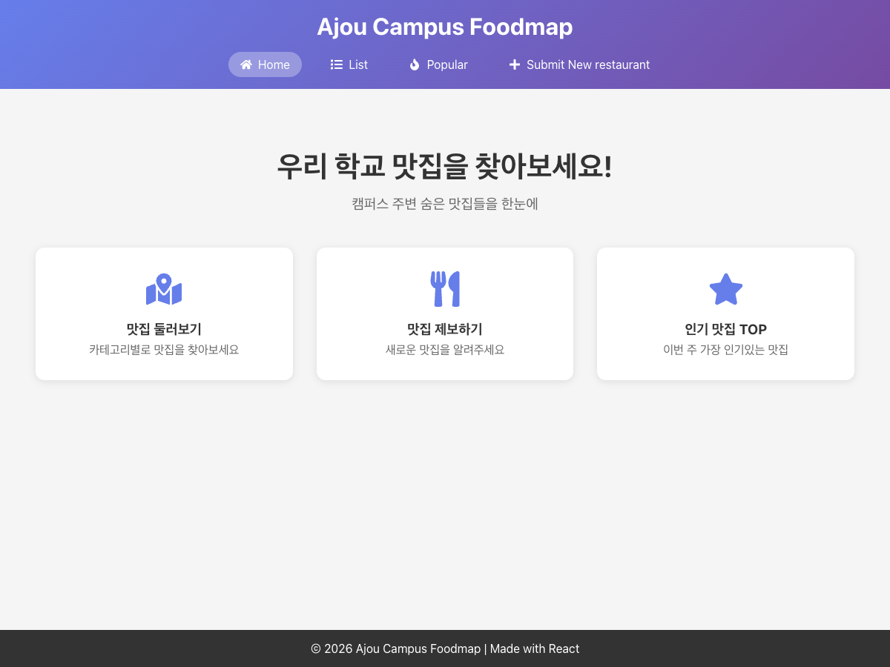
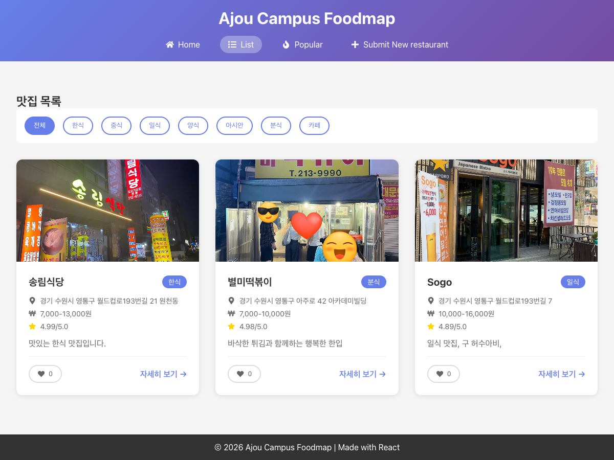
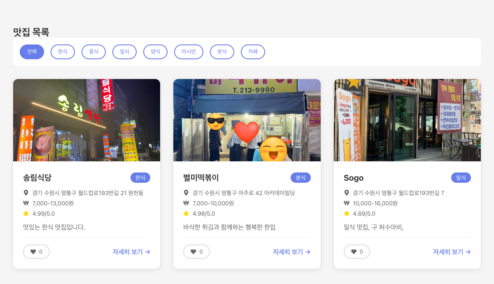
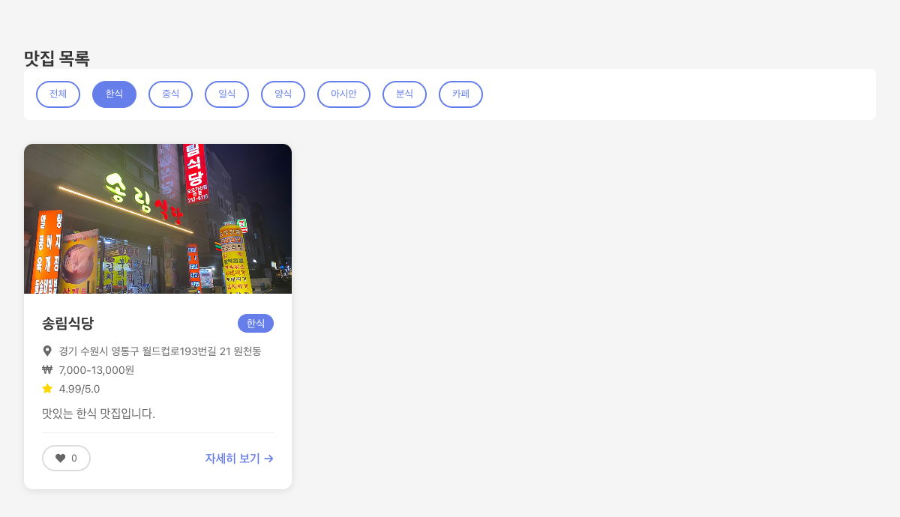
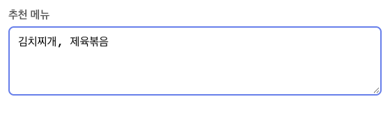
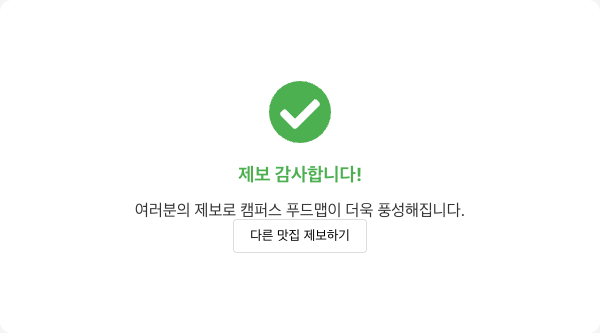
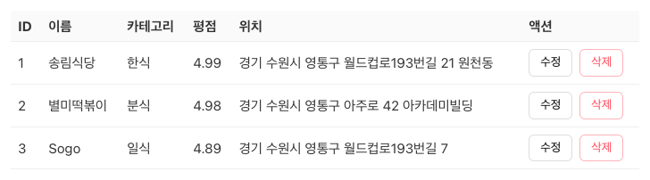
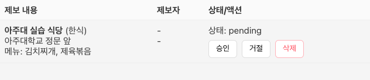
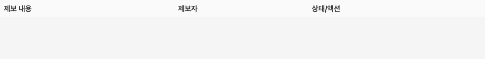

2026학년도 2학기 실전웹서비스개발
실전 웹서비스개발 – 6주차
Ajou Campus Foodmap 클라이언트 코드 리뷰
LECTURE 06
React 프로젝트의 실행 구조
진입 파일에서 App으로 이어지는 화면 구성

| 파일·폴더 | 역할 |
|---|---|
| package.json · vite.config.ts | 실행 명령·의존성·Vite 설정 |
| src/App.tsx | 공통 레이아웃·페이지 연결·Query 설정 |
| src/pages · components | 경로별 화면 · 재사용 UI |
| src/services · types | 데이터 접근·검증 · 데이터 타입 |
| src/styles · CSS | 전역 스타일·화면 배치 |
- 진입점 - React 화면을 브라우저에 연결하는 시작 위치
- index.html의 root 요소를 main.tsx에서 찾아 App 배치
src/main.tsx · root 검색과 App 연결 발췌
const root = document.getElementById('root');
if (!root)
throw new Error(
'앱을 표시할 root 요소를 찾을 수 없습니다.'
);
createRoot(root).render(
<StrictMode>
<App />
</StrictMode>
);공통 레이아웃과 페이지 라우팅
같은 앱 안에서 경로에 따라 바뀌는 본문

- 라우팅 - URL에 대응하는 페이지 선택
- Header·footer는 공통 영역, Routes는 페이지 영역
- HashRouter는 # 뒤 경로 사용 · :id는 상세 항목 식별
src/App.tsx · 홈·목록·상세 경로 발췌
<Routes>
<Route path="/" element={<HomePage />} />
<Route path="/list" element={<ListPage />} />
<Route
path="/restaurant/:id"
element={<DetailPage />}
/>
</Routes>;RestaurantCard.tsx · 상세 화면 링크
<DetailLink to={`/restaurant/${restaurant.id}`}>
자세히 보기 →
</DetailLink>;목록과 카드의 컴포넌트 분리
목록은 반복 배치, 카드는 한 항목의 표시 담당

- 컴포넌트 분리 - 역할에 따라 UI를 나누는 구조
- 부모는 목록을 순회하며 각 항목을 Props로 전달
- 자식은 받은 데이터로 카드의 이름·분류·정보 표시
RestaurantList.tsx · 목록 반복 발췌
<ListContainer>
{restaurants.map((restaurant) => (
<RestaurantCard
key={restaurant.id}
restaurant={restaurant}
/>
))}
</ListContainer>;RestaurantCard.tsx · 카드 제목 영역 발췌
<CardHeader>
<CardTitle>{restaurant.name}</CardTitle>
<CategoryBadge>{restaurant.category}</CategoryBadge>
</CardHeader>;조회 데이터와 화면 상태
원본 목록을 가져온 뒤 선택한 카테고리로 필터링

- 상태 분리 - 조회 결과와 화면 선택값을 따로 관리
- useQuery는 조회 결과·로딩·오류 관리
- useState는 선택값 관리 · 필터 결과는 렌더링 중 계산
src/pages/ListPage.tsx · 조회·필터 발췌
const [selectedCategory, setSelectedCategory] =
useState('전체');
const { data, isLoading, error } = useQuery({
queryKey: ['restaurants'],
queryFn: restaurantAPI.getRestaurants
});
const filteredData =
selectedCategory === '전체'
? data?.data
: data?.data.filter(
(r) => r.category === selectedCategory
);제보 폼의 저장 흐름
메뉴 입력의 변환과 저장 성공에 따른 화면 전환


- 폼 처리 - 입력값을 저장 형태로 변환해 전달하는 과정
- 쉼표·줄바꿈으로 구분한 메뉴 문자열을 배열로 변환
- 저장 요청의 성공 후 완료 상태로 화면 전환
SubmitRestaurant.tsx · 메뉴 입력 변환 발췌
const recommendedMenuArray =
typeof data.recommendedMenu === 'string'
? data.recommendedMenu
.split(/[\n,]/)
.map((item) => item.trim())
.filter(Boolean)
: [];SubmitRestaurant.tsx · 저장 성공 처리 발췌
await submissionAPI.createSubmission(payload);
setSubmitted(true);
toast.success('맛집이 성공적으로 제보되었습니다! 🎉');
reset();서비스 함수의 데이터 접근
현재 브라우저 저장소와 앞으로 연결할 서버 사이의 경계

| 현재 구현 | 서버 연결 시 대체 |
|---|---|
| initialRestaurants · readItems | 서버 API로 목록·상세 조회 |
| writeItems · localStorage | 서버 API로 데이터 변경·저장 |
| 비동기 함수 · { data: ... } | 페이지가 기대하는 응답 형태 유지 |
- 서비스 계층 - 데이터 접근 방법을 모으는 경계
- 페이지는 비동기 함수를 호출하고 { data: ... } 결과 사용
- 현재는 HTTP 요청 없이 localStorage에서 읽기·저장
src/services/api.ts · restaurantAPI 내부 발췌
export const restaurantAPI = {
getRestaurants: async (): Promise<
ApiResponse<Restaurant[]>
> => ({
data: readItems(
RESTAURANTS_KEY,
isRestaurant,
initialRestaurants
)
})
};서버가 맡을 데이터 책임
브라우저별 저장과 서버로 공유할 데이터


- 공유 데이터 - 서버에서 함께 조회·변경하는 원본
- 현재 제보는 브라우저별 저장 · 다른 브라우저에 미공유
- 선택 카테고리·입력 중인 값은 클라이언트 상태
| 대상 | 현재 코드 | 서버의 책임 |
|---|---|---|
| 맛집 | initialRestaurants · 브라우저 저장소 | DB의 목록·상세·생성·수정·삭제 |
| 제보·승인 | 브라우저 저장 · 관리자 화면에서 변경 | 입력 재검증·관리자 권한·승인 일괄 처리 |
| 좋아요 | 카드가 별도 localStorage 키에 직접 저장 | 사용자별 중복 제어·공유 개수 집계 |
| 인기 순위 | rating 내림차순 · 주간 집계 없음 | 조회 기간·정렬·집계 기준 적용 |